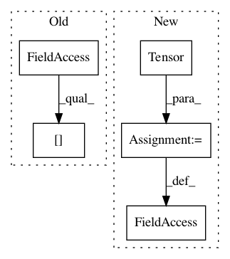

4dd61185f4e27cab7c8af55907399f9d789d549b,examples/eth.py,,,#,33
Before Change
network._reset() // Reset state variables.
network.connections[("X", "Ae")].normalize() // Normalize input -> excitatory weights
print(network.layers["Ae"].theta)
// Record spikes.
spike_record[i % update_interval] = spikes["Ae"]
After Change
// Record spikes during the simulation.
spike_record = torch.zeros_like(torch.Tensor(update_interval, time, n_neurons))
spike_record_full = torch.zeros_like(torch.Tensor(n_train, time, n_neurons))
// Neuron assignments and spike proportions.
assignments = -torch.ones_like(torch.Tensor(n_neurons))
proportions = torch.zeros_like(torch.Tensor(n_neurons, 10))
rates = torch.zeros_like(torch.Tensor(n_neurons, 10))
// Sequence of accuracy estimates.
accuracy = {"all" : [], "proportion" : []}
// Train the network.
print("Begin training.\n")
start = default_timer()
for i in range(n_train):
if i % progress_interval == 0:
print("Progress: %d / %d (%.4f seconds)" % (i, n_train, default_timer() - start))
start = default_timer()
if i % update_interval == 0 and i > 0:
// Get network predictions.
all_activity_pred = all_activity(spike_record, assignments, 10)
proportion_pred = proportion_weighting(spike_record, assignments, proportions, 10)
// Compute network accuracy according to available classification strategies.
accuracy["all"].append(100 * torch.sum(labels[i - update_interval:i].long() \
== all_activity_pred) / update_interval)
accuracy["proportion"].append(100 * torch.sum(labels[i - update_interval:i].long() \
== proportion_pred) / update_interval)
print("\nAll activity accuracy: %.2f (last), %.2f (average), %.2f (best)" \
% (accuracy["all"][-1], np.mean(accuracy["all"]), np.max(accuracy["all"])))
print("Proportion weighting accuracy: %.2f (last), %.2f (average), %.2f (best)\n" \
% (accuracy["proportion"][-1], np.mean(accuracy["proportion"]),
np.max(accuracy["proportion"])))
// Assign labels to excitatory layer neurons.
assignments, proportions, rates = assign_labels(spike_record, labels[i - update_interval:i], 10, rates)
// Get next input sample.
sample = next(data_loader)
inpts = {"X" : sample}
// Run the network on the input.
spikes = network.run(inpts=inpts, time=time)
network._reset() // Reset state variables.
network.connections[("X", "Ae")].normalize() // Normalize input -> excitatory weights
// print(network.layers["Ae"].theta)
// Record spikes.
spike_record[i % update_interval] = spikes["Ae"]
spike_record_full[i] = spikes["Ae"]
// Optionally plot the excitatory, inhibitory spiking.
if plot:
inpt = inpts["X"].t()
exc_spikes = spikes["Ae"]; inh_spikes = spikes["Ai"]
input_exc_weights = network.connections[("X", "Ae")].w
square_weights = get_square_weights(input_exc_weights, n_sqrt)
if i == 0:
inpt_ims = plot_input(images[i].view(28, 28), inpt)
spike_ims, spike_axes = plot_spikes({"Ae" : exc_spikes, "Ai" : inh_spikes})
weights_im = plot_weights(square_weights)
assigns_im = plot_assignments(assignments)
perf_ax = plot_performance(accuracy)
else:
inpt_ims = plot_input(images[i].view(28, 28), inpt, ims=inpt_ims)
spike_ims, spike_axes = plot_spikes({"Ae" : exc_spikes, "Ai" : inh_spikes}, ims=spike_ims, axes=spike_axes)
weights_im = plot_weights(square_weights, im=weights_im)
assigns_im = plot_assignments(assignments, im=assigns_im)
perf_ax = plot_performance(accuracy, ax=perf_ax)
plt.pause(1e-8)
print("Progress: %d / %d (%.4f seconds)\n" % (n_train, n_train, default_timer() - start))
print("Training complete.\n")
assignments, proportions, _ = assign_labels(spike_record_full, labels[:n_train], 10)
predictions_pw = proportion_weighting(spike_record_full, assignments, proportions, 10)
predictions_all = all_activity(spike_record_full, assignments, 10)
print("Accuracy Proportion Weighting = ", np.mean(np.array(predictions_pw)==np.array(labels[:n_train],dtype=np.int32)))
print("Accuracy All Activity = ", np.mean(np.array(predictions_all)==np.array(labels[:n_train],dtype=np.int32)))
In pattern: SUPERPATTERN
Frequency: 4
Non-data size: 5
Instances
Project Name: BindsNET/bindsnet
Commit Name: 4dd61185f4e27cab7c8af55907399f9d789d549b
Time: 2018-03-06
Author: darpansanghavi1993@gmail.com
File Name: examples/eth.py
Class Name:
Method Name:
Project Name: cornellius-gp/gpytorch
Commit Name: 60a342edc8b501802135df44869353cc8604d838
Time: 2018-01-11
Author: gpleiss@gmail.com
File Name: test/lazy/kronecker_product_lazy_variable_test.py
Class Name:
Method Name:
Project Name: SINGROUP/dscribe
Commit Name: a63872ac35cd9ccaa1649daa45715c2132a5f49d
Time: 2020-11-20
Author: lauri.himanen@gmail.com
File Name: examples/forces_and_energies/training.py
Class Name:
Method Name:
Project Name: junyanz/BicycleGAN
Commit Name: b0d8a8778fccfe49c8c289db32676b0745390732
Time: 2018-05-27
Author: junyanzhu89@gmail.com
File Name: video.py
Class Name:
Method Name: